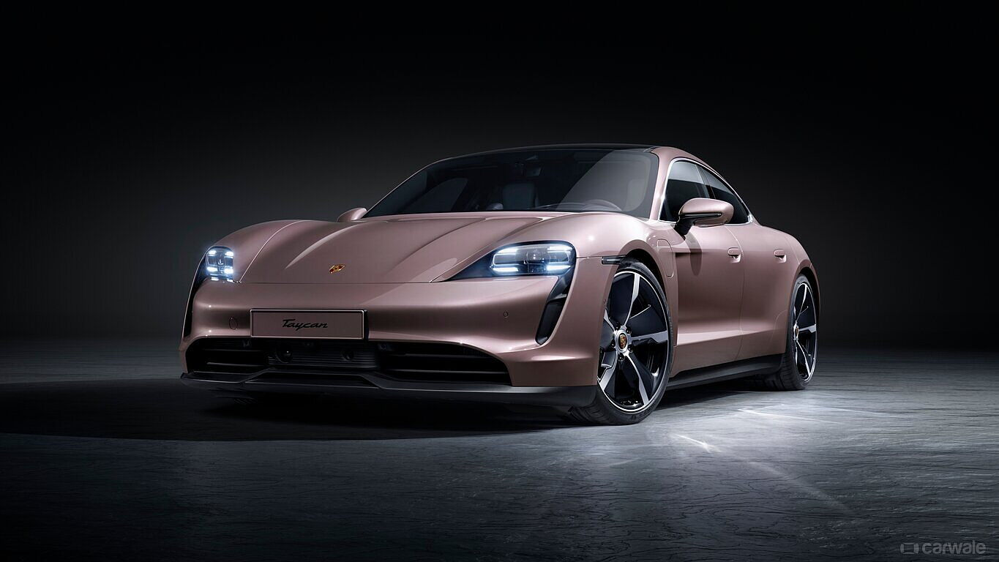
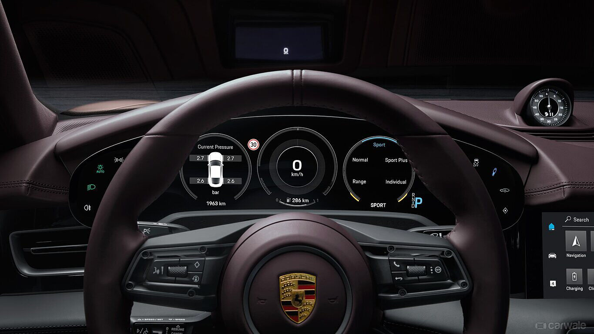
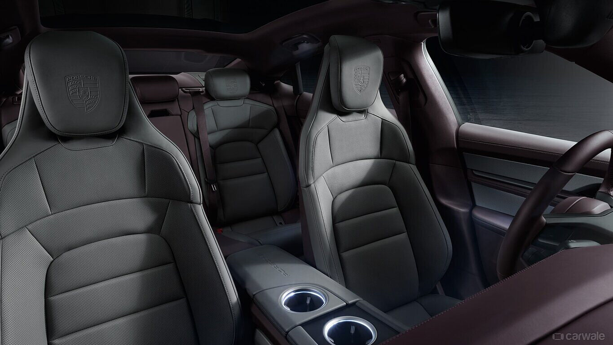
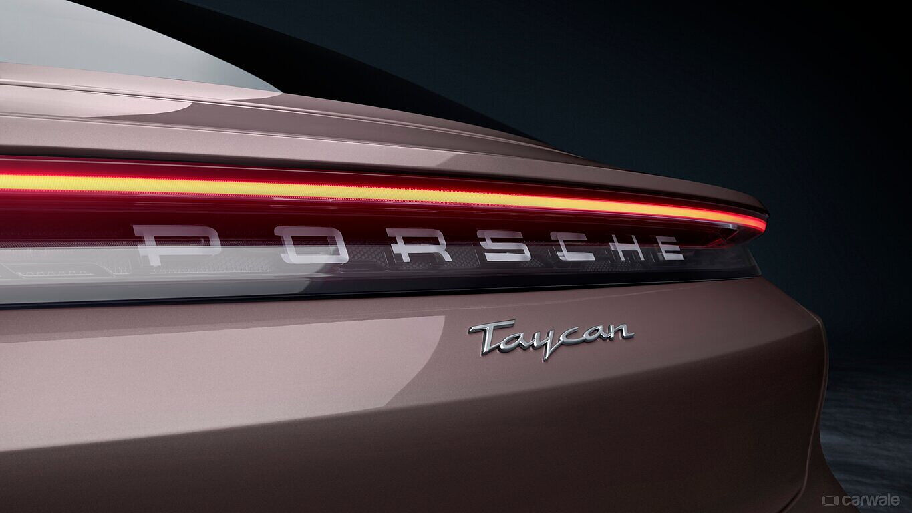
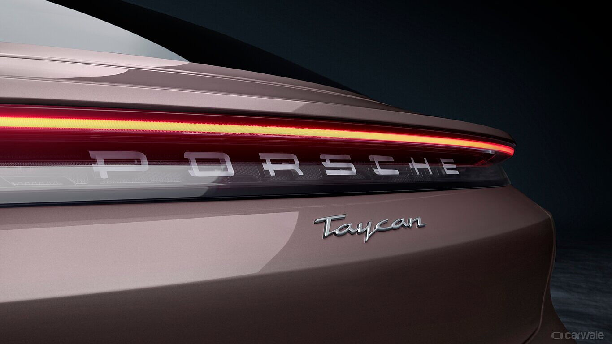
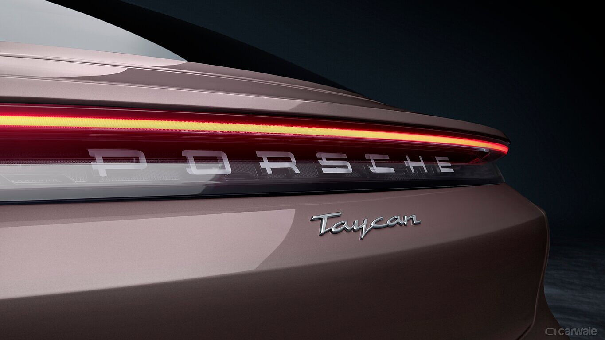

Porsche Taycan



 


Informations:
- Marque : Porsche
- Modèle : Taycan
- Année de fabrication : Variable (selon le modèle spécifique)
- Couleur : Variable (selon les préférences du client)
- Type de carburant : Électrique
- Transmission : Automatique
- Nombre de portes : 4 portes
- Capacité d'accueil : 4 à 5 passagers
- Kilométrage : Variable en fonction de l'usage
- État : Nouveau (ou d'occasion si applicable)
- Prix : Variable en fonction de l'équipement et des options
- Équipements : Comprend des caractéristiques avancées telles qu'une propulsion électrique performante, un intérieur luxueux avec des technologies de pointe, des systèmes de sécurité avancés, etc.
- Historique d'entretien : Selon les antécédents de la voiture (disponible pour les voitures d'occasion)